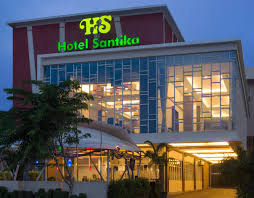

About
Santika Indonesia Hotel & Resort

PT Grahawita Santika didirikan untuk mengelola bisnis perhotelan di bawah kelompok kompas Gramedia pada tanggal 22 Agustus 1981.
Hotel Soeti adalah hotel pertama ytang di beli dari pemiliknya, Ibu soeityah Pudjosuwarno. Cikal balak hotel Santika ini terletak di Jalan sumatra No. 52-54 Bandung.
Pada Tahun 1988, Hotel sederhana dengan 33 kamar yang dibangun di area seluas 3.200 meter persegi ini di renovasi menjadi 70 kamar. Setelah renovasi tersebut selesai,
hotel ini di resmikan sebagai hotel Santika Bandung berbintang tiga oleh Menteri Pariwisata, Pos, dan Telekomunikasi, Susilo Sudarman
pada tanggal 27 maret 1989. Hotel Santika Bandung inilah yang menjadi pelopor pendirian Santika indonesia hotel & resort.
Hotel ini dibangun dengan fasilitas yang:
- Mewah
- Latar pemandangan yang indah
- harga terjangkau oleh konsumen
Latar belakang pandirian HOTEL SANTIKA ini di sebabkan pembredelan harian kompas pasa tahun 1987.
ole karena itu, para pendiri kelompok kompas Gramedia Harus memikirkan di serivikasi unit bisnis diluar bisnis intinya sebagai media komunkasi. Mereka membuat rencana untuk mencegah pemecatan
massal. jika suatu hari nanti kompas akan di bredel kembali, masih ada anak perusahaan yang bisa menyokong karyawan Mereka. beberapa bisnis mulai dilakukan, termasuk diantaranya adalah industri
perhotelan. pada awalnya, rencana pendirian sebuah hotel tidak disetujui oleh pihak manajemen, karna pada saat itu bisnis hotel di anggap konotasi yang negatif serta Return on Invesment dinilai berjalan lamban.
Desain by Fariskyyyy